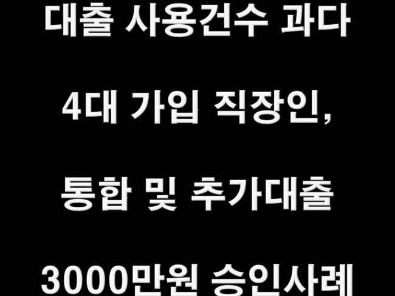
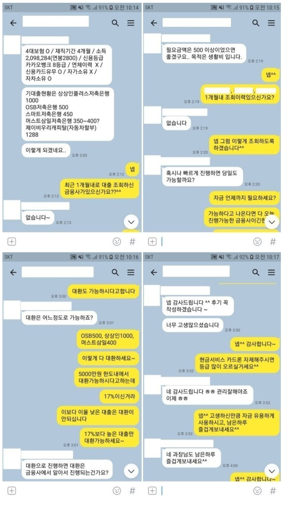

대출사용건수 과다 4대 가입 직장인, 통합 및 추가대출 3000만원 승인사례!

안녕하세요^^ 뱅크앤론 상담사 유미광 과장입니다^^ 오늘은 제가 진행해드린 장** 고객님의 대출
사례를 소개해 드리겠습니다. 장** 고객님께서는 월 평균급여200만원(연봉2800만) 수령중이시고, 재
직한지 4개월째 되는 4대보험 가입 직장인이셨습니다. 사용중인 대출로는 JB우리캐차할부1288만원,
OSB저축 500만원, 상상인저축 1000만원 스마트저축차담보 450만원, 머스트삼일저축은행 400만원을
이용중이셨습니다. 생활자금으로 500만원이 필요하셔서, 기존에도 대출 진행해드렸던 저에게 다시 문
의 주셨습니다^^ 이에 저는 추가 대출도 중요하시지만, 통합도 되면 신용관리에 유리하실것이라 판단
하여, 금융사를 선정하여 조회해드렸습니다. 그 결과한 금융사에서 추가 자금 및 대환으로 진행가능하
다는 결과를 받았고, 금융사 3곳을 한곳으로 통합하고 추가자금 1200만원을 사용하실수있었습니다. 이
에 장** 고객님께서도 매우 만족하셨습니다. 자세한 사항은 아래 저와 장**고객님의 카톡대화 내용을 참
고하실 수 있습니다. 감사합니다^^
